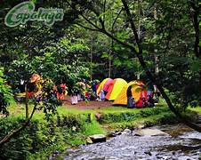

Capolaga
Wisata Alam Capolaga Surga Tersembunyi di Kota Subang
Jika Anda ingin menikmati sisi lain kawasan Bandung, sesekali arahkan kemudi Anda ke Bandung Utara. Usai melintas kawasan Lembang dan Gunung Tangkuban Parahu yang teduh dengan pohon cemara nya yang menjulang, Anda akan menemui kawasan wisata Ciater. Di titik pertigaan antara Bandung, Ciater, dan Desa Cicadas Kab. Subang, Anda jangan berbelok ke kanan, tetapi berbeloklah ke kiri (ke arah kampung Panaruban Desa Cicadas). Sepuluh menit kemudian, Anda akan menemui kawasan wisata alam “Capolaga Adventure Camp”. Di kawasan ini Anda tidak hanya akan menikmati kebun teh yang menghijau atau alam pegunungan yang segar, tetapi juga berbagai objek wisata yang sudah dikemas sedemikian rupa. Mulai dari kawasan camping ground, air terjun, sungai, flying fox, tracking, bird watching, sampai ke agrowisata & mengenal berbagai macam tumbuh2an. Kawasan Wisata Alam Capolaga sebenarnya terdapat di Kab. Subang. Tepatnya di Kampung Panaruban, Desa Cicadas, Kec. Sagalaherang, Kab. Subang, Jawa Barat. Namun karena kawasan ini berada tepat di perbatasan Kab. Bandung Barat, jadi waktu tempuh ke kawasan ini tidak terlalu lama. Anda hanya akan menempuh waktu 1 jam dari arah Bandung, 1 jam dari Purwakarta, 30 menit dari Kota Subang, 30 menit dari Lembang, dan 15 menit dari Sagalaherang. Untuk Anda yang berasal dari kota Jakarta dan sekitarnya bisa menggunakan Tol Cikampek diteruskan masuk tol Cipali lalu keluar Tol kota Subang dan arahkan ke ciater. Kawasan ini memiliki keindahan ekosistem Sungai Cimuja dan Sungai Cikoneng yang menghadirkan 3 air terjun/ curug yang unik. Ketiga air terjun itu adalah Curug Karembong, Curug Sawer, dan Curug Goa Badak. Ketiga air terjun inilah yang menjadi daya tarik Wisata Alam Capolaga. Anda bisa bermain air dan mandi dibawah curahan air terjun dengan aman.